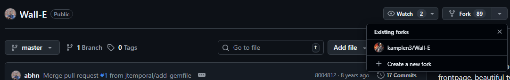
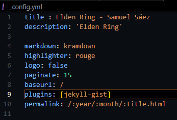
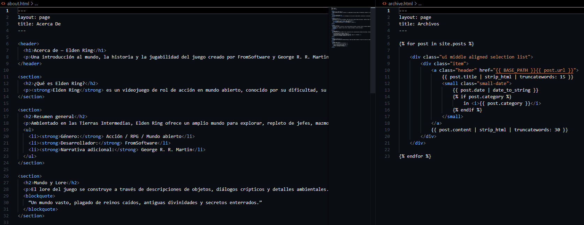
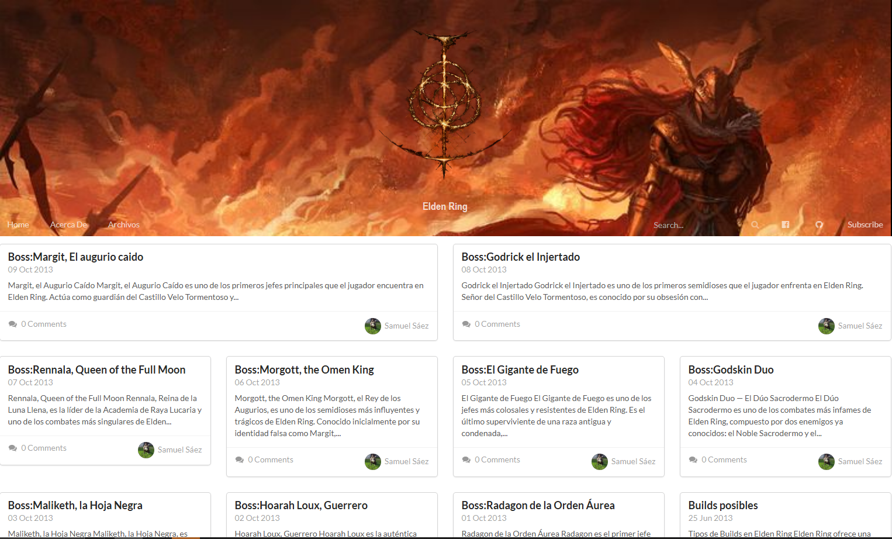

Ejercicio 3 Creación del sitio con tema propio
1.Instación del Wall-E
Tenemos que hacer un fork al repositorio original con el tema Wall-E

Después de hacer el fork tenemos que clonar el repositorio en local para poder asi configurar el blog.
Para esto tendremos que usar Git clone (URL del repositorio)

2.Configuración del tema
Con el repositorio clonado tendremos que configurar, al igual que el resto de temas, el archivo config.yml donde iran los datos básicos como titulo, descripcion,el directorio raiz...

Con la el config acabado podemos pasar a personalizar la pagina, en la carpeta _includes en este caso podemos encontrar distintos elementos personalizables.

Por ejemplo en el card.html podemos personalizar los post que se ven desde home, cambiando la ultima linea podemos hacer que la imagen del autor que se muestra cambie.

3.Creacion de los Posts
Para empezar a crear los post tenemos que dirigirnos a la carpeta _posts, donde se encuentran algunos ejemplos.
Nosotros solo tenemos que cambiar el texto que se encuentra dentro de uno de los precreados y la cabecera ajustarla para que cuadre con el contenido y el autor.

4.Personalización
Para darle un toque más personal podemos cambiar distintos apartados del blog como about y archive.
Para cambiar estos apartados tenemos que dirigirnos a about.html y archive.html respectivamente donde podremos cambiar el contenido y el nombre con el que aparecen en el blog.

5.Subida al sitio Netlify
Para subir el blog a Netlify, después de ya haberlo subido a GitHub, tendremos que ir a la página Web de Netlify e iniciar sesión.
Con la sesión iniciada podremos subir un repositorio de github

Al seleccionar el repositorio tendremos que indicar la rama que se va a subir y un nombre. Continuando no tendría que dar ningún error y generaría un pagina web.
6.Resultado
Asi tendría que quedar.
